Префектура Канагава · Кавасаки · сакэ
«Сакадоя» в Кавасаки: сакэ от 100 мл и девять бутылок, которые советует управляющий
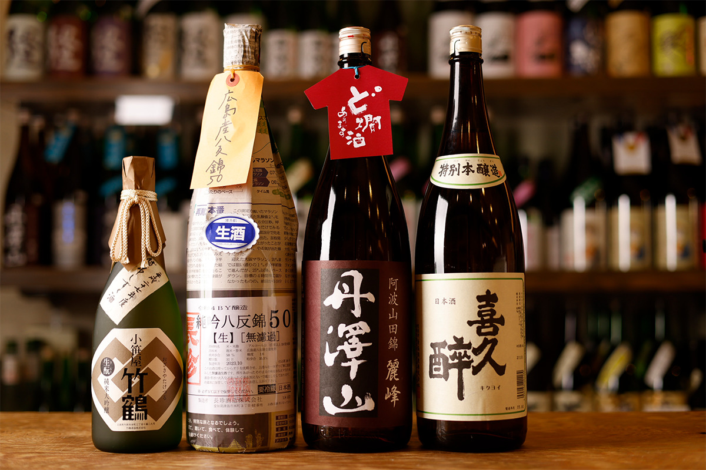
Магазин «Сакадоя» в Кавасаки торгует сакэ больше 120 лет. Здесь можно купить всего 100 мл и попробовать незнакомую марку, а управляющий магазина назвал девять бутылок, которые стоит знать.
Магазин
Сто двадцать лет за прилавком
«Сакадоя» открылся в 1902 году, и за 120 с лишним лет стал магазином, которому доверяют и те, кто делает сакэ, и те, кто его пьёт. Пятый по счёту хозяин берёт в продажу только честно сделанное сакэ к еде. Сакэ здесь главное, но есть и сётю, японское вино, натуральные вина.
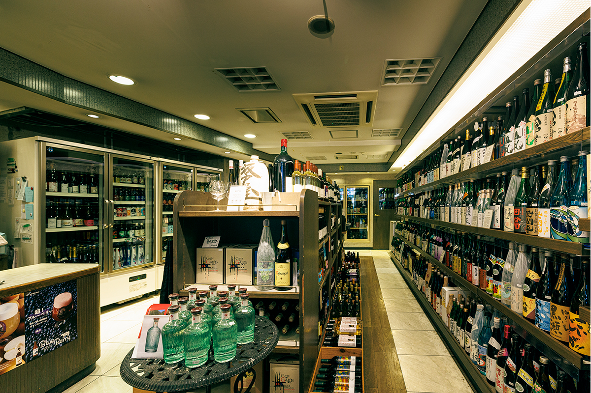
Хозяин сам ездит по пивоварням и годами выстраивает отношения с мастерами. Так он отобрал около 30 пивоварен, и их сакэ ценят известные рестораны и большие любители.
Сотрудники магазина каждый день проходят «тренировку сакэ», то есть дегустацию. Открытые бутылки потом идут в продажу на розлив: 40–50 видов сакэ можно купить от 100 мл. Так проще попробовать марку, о которой давно хотелось узнать, не покупая целую бутылку.
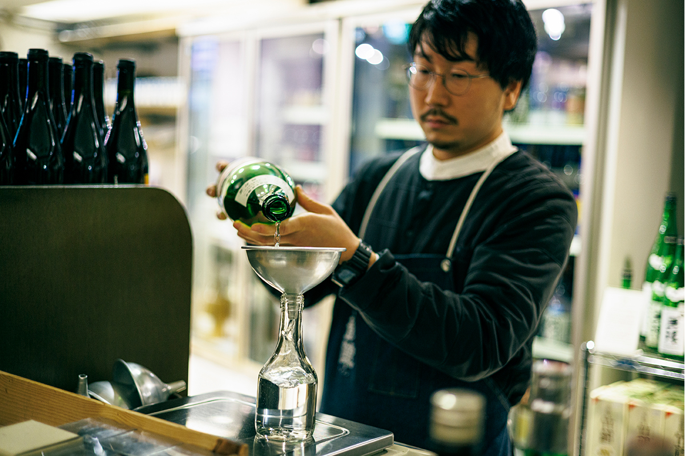
«Мы стараемся объяснять сакэ понятно, в том числе тем, кто только начинает, так что смело заговаривайте с нами. С хозяином мы часто говорим, что хотим, чтобы подогретое сакэ стало обычным делом: в минуту отдыха или в конце дня»
управляющий магазином
Чтобы покупателю было легче выбрать, в «Сакадоя» делят сакэ на четыре свои группы: «свежие», «спокойные», «насыщенные» и «выдержанные». У магазина есть и собственные чашечки, сделанные так, чтобы сакэ было приятно пить, и их тоже хвалят.
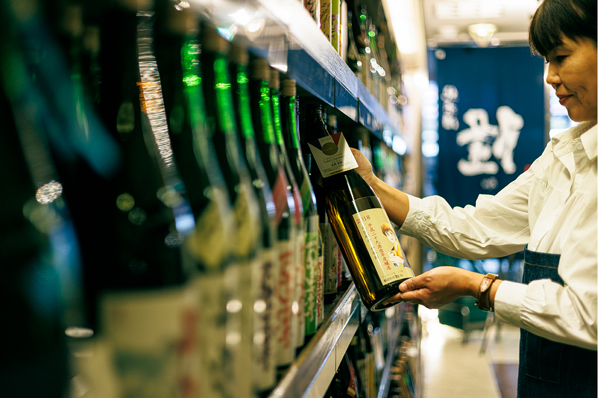
Зима
Пять бутылок для холодного сезона
Первая рекомендация управляющего на зиму это «Тётин», дзюнмай гиндзё из хаттаннисики, сорта риса, которым гордится Хиросима. Его варят на богатой минералами подземной воде трёх рек Кисо. Сакэ непастеризованное. «Прекрасная работа, которая раскрывает терруар. Вкус многослойный, но цельный: чистая кислотность и мощный умами», говорит управляющий. Бутылка 1,8 л стоила 4400 иен в 2024 году.
«Тандзавасан Рэйхо» это главная марка пивоварни, для которой важнее всего, чтобы сакэ сливалось с едой. Управляющий называет его сакэ к столу с умами «в самую середину»: оно хорошо идёт с бульоном даси из сушёного полосатого тунца и с соевым соусом, и его лучше подогреть. «Роскошное сакэ, которое хочется медленно пить на Новый год под праздничные закуски». 1,8 л стоили 3850 иен в 2024 году.
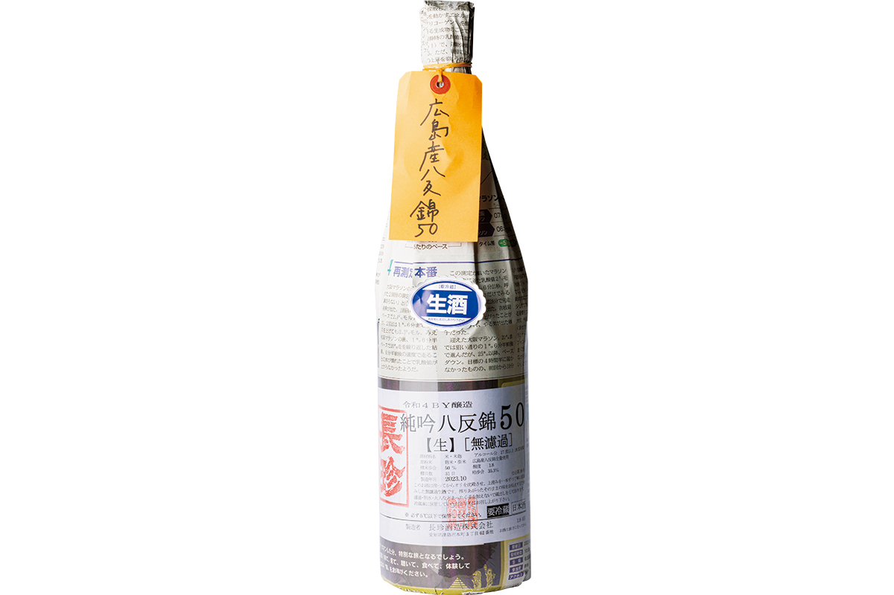
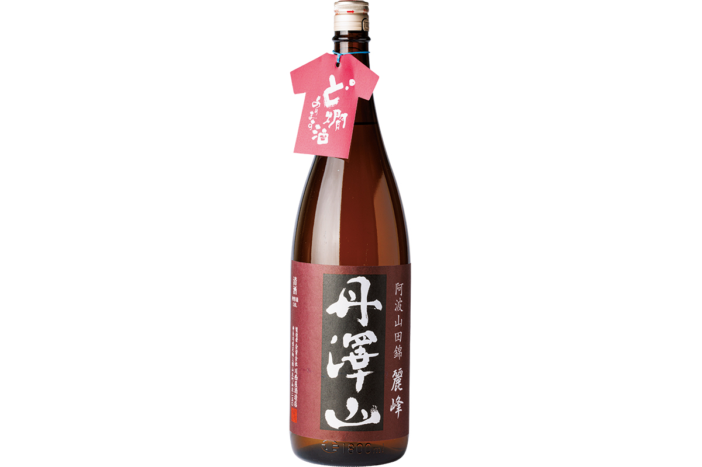
«Асахикику Дайти» варят из риса ямада-нисики, который без пестицидов выращивают фермеры Итосимы в префектуре Фукуока. «В нём видна мягкость самого хозяина пивоварни: вкус спокойный и глубокий. Его часто заказывают японские рестораны со звёздами, оно не спорит с едой». Бутылка 1,8 л стоила 4730 иен в 2024 году.
Пивоварня «Сохомарэ» одна из главных в префектуре Тотиги. Её дзюнмай гиндзё сделан методом кимото. «Здесь хранят в отдельных ёмкостях сакэ разных лет и на разных дрожжах и смешивают их с удивительным чувством меры. Получается плотный, сложный вкус, и чувствуется кислотность, которую даёт кимото». 1,8 л стоили 5500 иен в 2024 году.
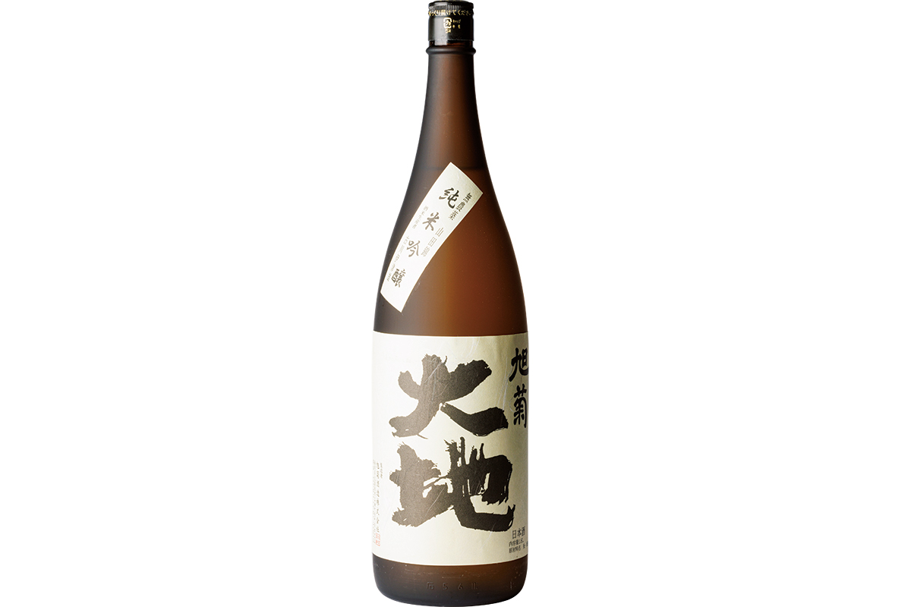
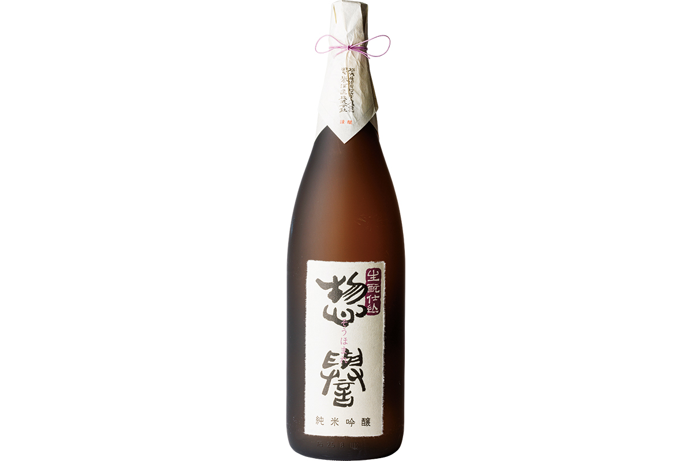
«Ёэмон» сварила к своему столетию старая пивоварня из Исидории в префектуре Иватэ. Это родина мастеров «намбу тодзи», которые сыграли большую роль в истории японского сакэ. Рис для него рикуу № 132, а разливают сакэ прямо из-под пресса. «Оно живое, игристое, очень свежее. В этом сакэ чувствуется земля, где его сделали». 1,8 л стоили 3960 иен в 2024 году.
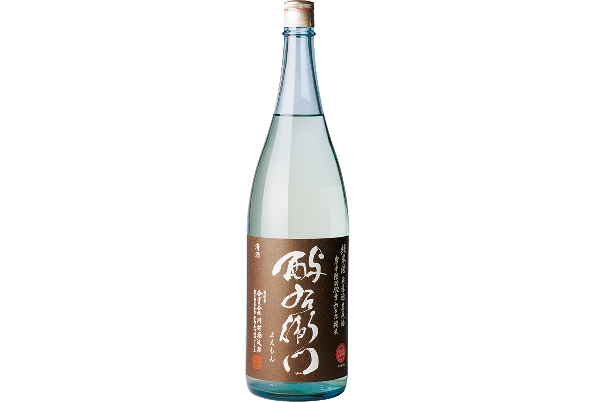
Каждый день
Сакэ, которое не надоедает
«Кикуёи» особенно любят знатоки сакэ. Для дома управляющий выбрал его токубэцу хондзёдзо: «Чистое послевкусие, которым славится „Кикуёи“, а вкусно оно при любой температуре, от прохладного до горячего. Пьётся без усталости. Это сакэ как член семьи». 1,8 л стоили 2310 иен в 2024 году.
Пивоварня «Дзюдзи Асахи» известна тем, что в эпоху Мэйдзи её сакэ похвалил Такаёси Кидо (1833–1877), один из политиков, создававших новое японское государство после 1868 года. Он назвал его «лучшим сакэ Поднебесной». Её сакэ из риса омати, сделанное методом кимото, крепостью всего 13 градусов. «Алкоголя немного, но во вкусе есть выдержка и полнота. Мягкое и глубокое, его советую подогреть». 1,8 л стоили 3080 иен в 2024 году.
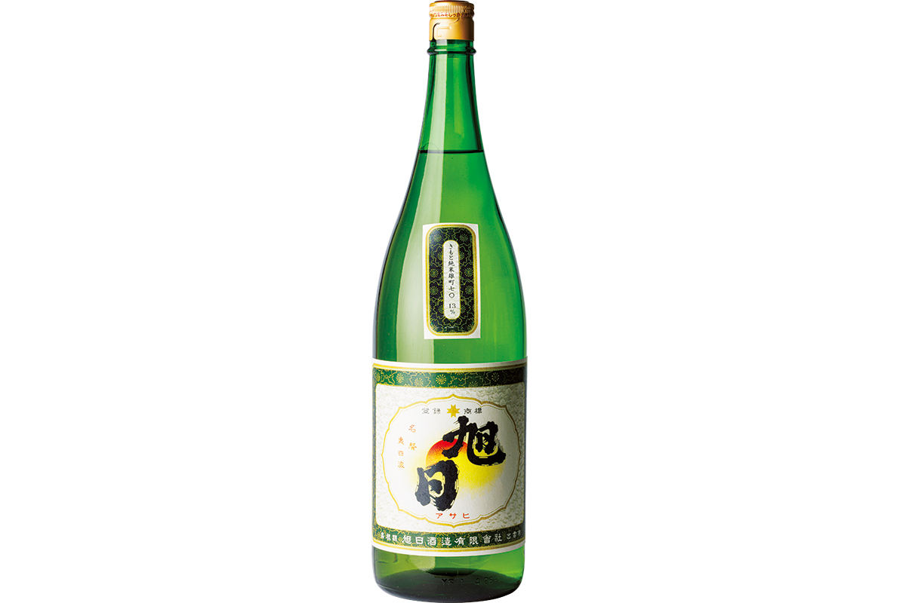
Подарок
Две бутылки для особого случая
«Нитинити Акицу» это новая марка известного мастера тодзи. Он сам обрабатывает поле в Акицу в префектуре Хёго: считается, что там растёт лучший рис ямада-нисики. «Вкус свежий и чистый, но с глубиной, и умами раскрывается всё больше». Бутылка 720 мл стоила 11 000 иен в 2024 году.
Пивоварня «Такэцуру» считает главным сакэ к еде, которое хорошо в подогретом виде. «Озасая Такэцуру», по словам управляющего, показывает это лучше всего. Его готовят в деревянных чанах методом кимото, сакэ стекает из подвешенных мешков без пресса, а потом два года выдерживается. «Чистый вкус, перед которым не устоит даже знаток». 720 мл стоили 7700 иен в 2024 году.
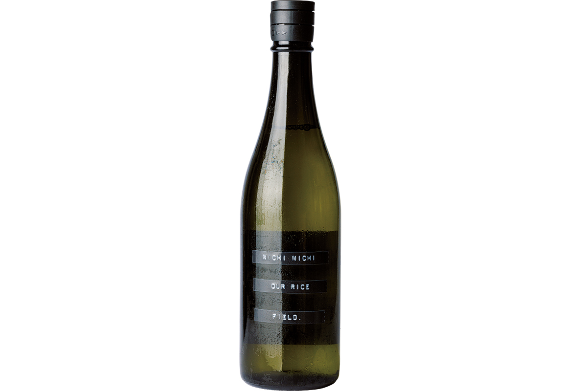
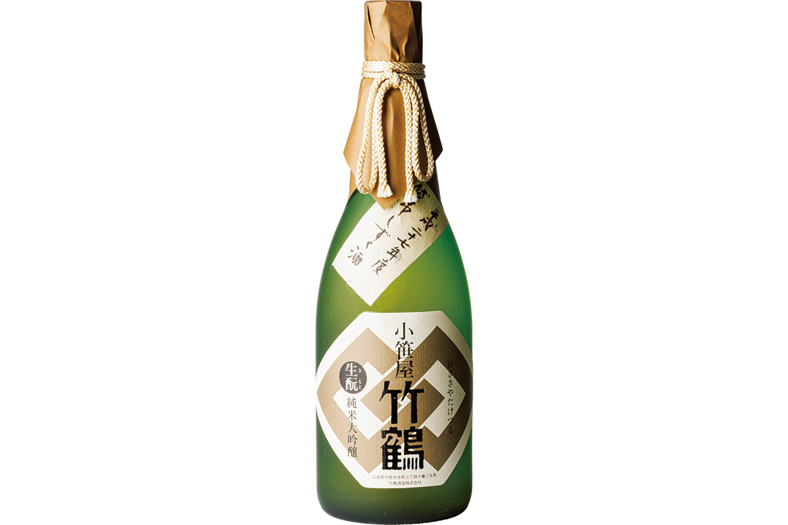
«Сакадоя»
- Адрес
- префектура Канагава, Кавасаки, район Такацу, Симосакунобэ, 2-9-9, здание MSB, 1-й этаж
- Телефон
- +81 44-866-2005
- Часы работы
- 11:00–13:00, 14:00–20:00, в субботу 11:00–19:00
- Выходные
- воскресенье
Фото: Симпэй Фукадзава.